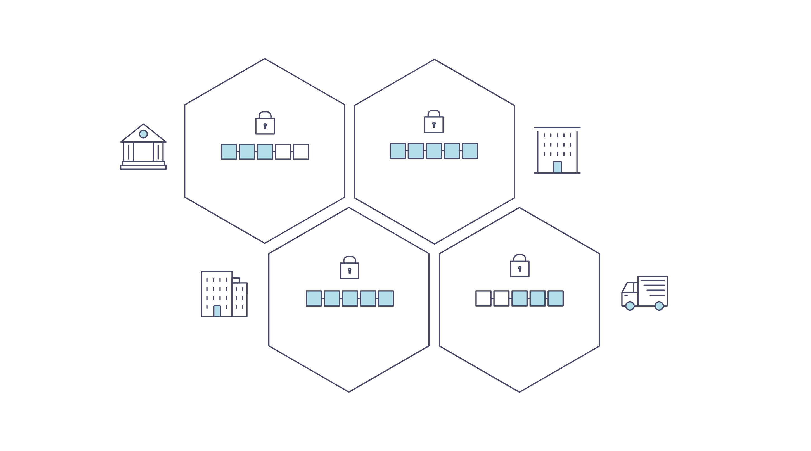

Introdução¶
A Hyperledger Fabric é uma plataforma de tecnologia de livro-razão distribuído, sustentada por uma arquitetura modular que oferece alto grau de confidencialidade, resiliência, flexibilidade e escalabilidade. Ela foi projetada para suportar implementações conectáveis de diferentes componentes e acomodar a complexidade e as especificidades que existem em todo o ecossistema corporativo.
Recomendamos que os novos usuários iniciem a partir da introdução abaixo para familiarizar-se com o funcionamento das blockchains e com os recursos e componentes específicos da Hyperledger Fabric.
Quando se sentir confortável - ou se você já estiver familiarizado com o blockchain e a Hyperledger Fabric - vá para Getting Started e, a partir daí, explore as demos, especificações técnicas, APIs etc.
O que uma Blockchain?¶
Um Livro-Razão Distribuído
No coração de uma rede de blockchain está um livro-razão distribuído que registra todas as transações que ocorrem na rede.
Um registro de blockchain é frequentemente descrito como descentralizado porque é replicado entre muitos participantes da rede, cada um dos quais colabora em sua manutenção. Veremos que a descentralização e a colaboração são atributos poderosos que refletem a maneira como as empresas trocam bens e serviços no mundo real.
Além de serem descentralizadas e colaborativas, as informações registradas em uma blockchain são apenas adicionadas, usando técnicas criptográficas que garantem que uma vez que uma transação tenha sido adicionada ao livro-razão, ela não possa ser modificada. Essa propriedade de “imutabilidade” facilita a determinação da origem das informações, porque os participantes podem ter certeza de que as informações não foram alteradas após o fato. É por isso que as blockchains às vezes são descritas como sistemas de prova.
Contratos Inteligentes
Para dar suporte à atualização consistente de informações — e habilitar uma série de funções operacionais (transações, consultas, etc.) — uma rede blockchain usa contratos inteligentes para fornecer acesso controlado ao livro-razão.

Os contratos inteligentes não são apenas um mecanismo essencial para encapsular informações e mantê-las de uma forma simples na rede, também podem ser escritos para permitir que os participantes executem certos aspectos das transações automaticamente.
Um contrato inteligente pode, por exemplo, ser escrito para estipular o custo do envio de um item em que a taxa de envio muda dependendo da rapidez com que o item chega. Com os termos acordados por ambas as partes e registrados no livro-razão, os valores apropriados mudam de mãos automaticamente quando o item é recebido.
Consenso
O processo de manter as transações do livro-razão sincronizadas na rede — para garantir que os registros sejam atualizados apenas quando as transações forem aprovadas pelos participantes apropriados, e quando os registros forem atualizados, eles serão atualizados com as mesmas transações e na mesma ordem — é chamado consenso.

Você aprenderá muito mais sobre livros-razão, contratos inteligentes e consenso mais tarde. Por enquanto, basta pensar uma blockchain como um sistema de transação replicada compartilhada, atualizado por meio de contratos inteligentes e mantido constantemente sincronizado por meio de um processo colaborativo chamado consenso.
Por que um Blockchain é útil?¶
Sistemas de Registro Atuais
As redes transacionais de hoje são pouco mais que versões ligeiramente atualizadas das redes existentes desde que os registros de negócios foram criados. Os membros de uma rede comercial negociam entre si, mas mantêm registros separados de suas transações. E as coisas que eles estão negociando — sejam tapeçarias flamengas do século 16 ou os valores mobiliários de hoje — devem ter sua origem estabelecida cada vez que são vendidas para garantir que a empresa que vende um item possua os documentos para validar a propriedade deles.
O que resta é uma rede comercial com a seguinte aparência:

A tecnologia moderna levou esse processo do registro na pedra para as pastas de papeis, aos discos rígidos e plataformas em nuvem, mas a estrutura subjacente é a mesma. Não existem sistemas unificados para gerenciar a identidade dos participantes da rede; estabelecer a origem é tão trabalhoso que leva dias para autorizar transações de valores mobiliários (cujo volume mundial é avaliado em muitos trilhões de dólares); os contratos devem ser assinados e validados manualmente; e todo banco de dados no sistema contém informações únicas e, portanto, representa um único ponto de falha.
É impossível, com a atual abordagem fragmentada do compartilhamento de informações e processos, criar um sistema de registro que abranja uma rede comercial, mesmo que as necessidades de visibilidade e confiança sejam claras.
A Diferença do Blockchain
E se, em vez de um ineficiente ninho do rato representado pelo sistema “moderno” de transações, as redes comerciais tivessem métodos padrão para estabelecer identidade na rede, executar transações e armazenar dados? E se um ativo pudesse ter sua origem estabelecida a partir do exame de uma lista de transações que, uma vez escritas, não podem ser alteradas e, portanto, são confiáveis?
Essa rede de negócios ficaria mais ou menos assim:

Esta é uma rede blockchain, em que cada participante tem sua própria cópia replicada do livro-razão. Além das informações do livro serem compartilhadas, os processos que atualizam o livro também são. Ao contrário dos sistemas de hoje, em que os programas privados de um participante são usados para atualizar seus livros-razão privados, um sistema de blockchain tem programas compartilhados para atualizar os livros-razão compartilhados.
Com a capacidade de coordenar sua rede de negócios por meio de um livro-razão compartilhado, as redes de blockchain podem reduzir o tempo, o custo e o risco associados ao processamento de informações privadas, melhorando a confiança e a visibilidade.
Agora você sabe o que é blockchain e por que é útil. Existem muitos outros detalhes importantes, mas todos eles se relacionam com essas idéias fundamentais do compartilhamento de informações e processos.
O que é a Hyperledger Fabric?¶
A Linux Foundation fundou o projeto Hyperledger em 2015 para promover as tecnologias de blockchain entre indústrias. Em vez de declarar um único padrão de blockchain, incentiva uma abordagem colaborativa ao desenvolvimento de tecnologias blockchain por meio de um processo comunitário, com direitos de propriedade intelectual que incentivam o desenvolvimento aberto e a adoção de padrões importantes ao longo do tempo.
A Hyperledger Fabric é um dos projetos de blockchain do Hyperledger. Como outras tecnologias de blockchain, ela possui uma livro-razão, usa contratos inteligentes e é um sistema pelo qual os participantes gerenciam suas transações.
Onde a Hyperledger Fabric rompe com outros sistemas blockchain é que ele é privado e permissionado. Em vez de um sistema aberto e não permissionado, que permite que identidades desconhecidas participem da rede (exigindo protocolos como “prova de trabalho” para validar transações e proteger a rede), os membros de uma rede Hyperledger Fabric se registram por meio de um provedor de serviços serviço Provedor de Associação Membership Membership (Membership Service Provider - MSP).
A Hyperledger Fabric também oferece várias opções conectáveis. Os dados do livro-razão podem ser armazenados em vários formatos, os mecanismos de consenso podem ser trocados por dentro e por fora e diferentes MSPs são suportados.
A Hyperledger Fabric também oferece a capacidade de criar canais, permitindo que um grupo de participantes crie um livro-razão separado para suas transações. Essa é uma opção especialmente importante para redes em que alguns participantes podem ser concorrentes e não desejam que todas as transações que eles fazem — um preço especial que estão oferecendo a alguns participantes e não outros, por exemplo — sejam conhecidas por todos os participantes. Se dois participantes formarem um canal, eles — e nenhum outro — terão cópias do livro-razão desse canal.
Livro-Razão Compartilhado
A Hyperledger Fabric possui um subsistema de razão que compreende dois componentes: o estado global e o log de transações. Cada participante possui uma cópia do livro-razão em todas as redes do Hyperledger Fabric às quais eles pertencem.
O componente do estado global descreve o estado do livro-razão em um determinado momento. É o banco de dados do livor-razão. O componente do log de transações registra todas as transações que resultaram no valor atual do estado global; é o histórico de atualizações para o estado global. O livro-razão, portanto, é uma combinação do banco de dados do estado global e do histórico do log de transações.
O livro-razão permite que seja substituído o modelo de armazenamento de dados do estado global. Por padrão, é um banco de dados LevelDB do tipo chave-valor. O log de transações não precisa ser conectável. Ele simplesmente registra os valores antes e depois do banco de dados do livro-razão que está sendo usado pela rede blockchain.
Contratos Inteligentes
Os contratos inteligentes do Hyperledger Fabric são escritos como um chaincode e são invocados por um aplicativo externo ao blockchain quando esse aplicativo precisa interagir com o livro-razão. Na maioria dos casos, o chaincode interage apenas com componente do banco de dados do livro-razão e o estado global (consultando-o, por exemplo) e não com log de transações.
Um chaincode pode ser implementado em várias linguagens de programação. Atualmente, Go e Node são suportados.
Privacidade
Dependendo das necessidades de uma rede, os participantes de uma rede Business-to-Business (B2B) podem ser extremamente sensíveis sobre a quantidade de informações que compartilham. Para outras redes, a privacidade não será uma das principais preocupações.
O Hyperledger Fabric suporta redes em que a privacidade (usando canais) é um requisito operacional essencial, bem como redes que são comparativamente abertas.
Consenso
As transações devem ser gravadas no razão na ordem em que ocorrem, mesmo que possam estar entre diferentes conjuntos de participantes na rede. Para que isso ocorra, a ordem das transações deve ser estabelecida e um método para rejeitar transações incorretas que foram inseridas no razão por erro (ou maliciosamente) deve ser implementado.
Esta é uma área amplamente pesquisada na ciência da computação, e há muitas maneiras de alcançá-la, cada uma com diferentes vantagens e desvantagens. Por exemplo, o PBFT (Tolerância falhas bizantinas práticas) pode fornecer um mecanismo para que as réplicas de arquivos se comuniquem entre si para manter cada cópia consistente, mesmo em caso de corrupção. Como alternativa, no Bitcoin, a ordenação acontece através de um processo chamado mineração, onde os computadores concorrentes correm para resolver um quebra-cabeça criptográfico que define a ordem em que todos os processos se baseiam posteriormente.
A Hyperledger Fabric foi projetada para permitir que os iniciantes na rede escolham um mecanismo de consenso que melhor represente os relacionamentos existentes entre os participantes. Como na privacidade, há um espectro de necessidades; desde redes altamente estruturadas em seus relacionamentos até aquelas mais ponto-a-ponto.